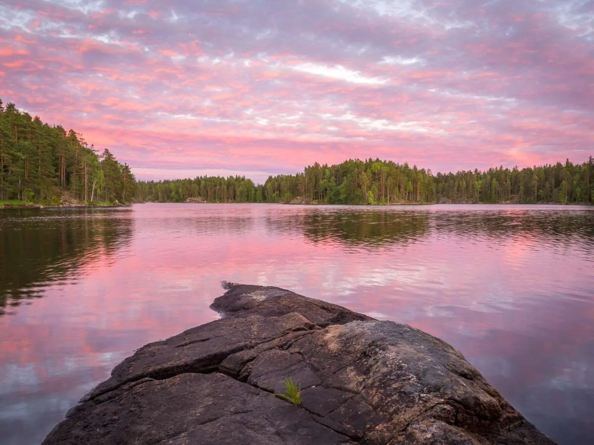
Nuuksio
Metsää ja järviä lähellä Helsinkiä.
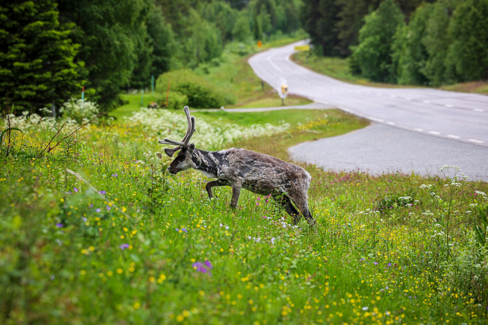
Alla olevaan taulukkoon on koottu muutama suosittu kansallispuisto.
| Puisto | Maakunta | Tunnettu |
|---|---|---|
| Nuuksio | Uusimaa | Lähellä pääkaupunkiseutua |
| Pallas-Yllästunturi | Lappi | Tunturit ja pitkät vaellusreitit |
| Koli | Pohjois-Karjala | Kansallismaisema Pielisen yllä |
| Oulanka | Pohjois-Pohjanmaa ja Lappi | Karhunkierros-reitti |

Metsää ja järviä lähellä Helsinkiä.
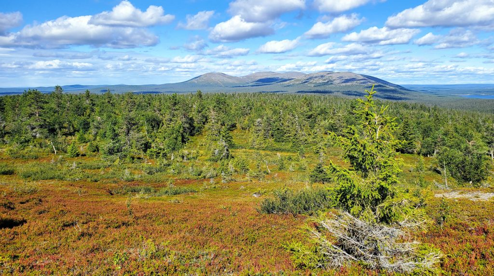
Tunturit ja pitkät vaellusreitit.
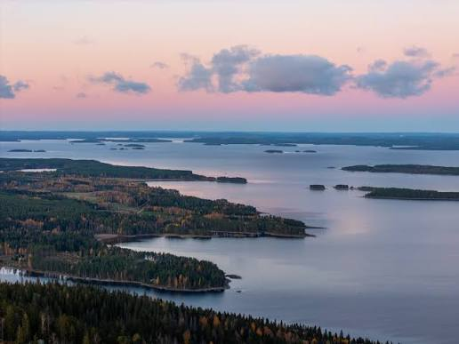
Kansallismaisema Pielisen yllä.
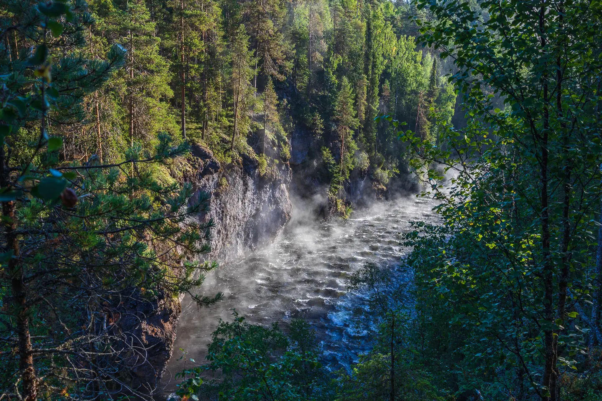
Karhunkierros ja koskimaisemat.
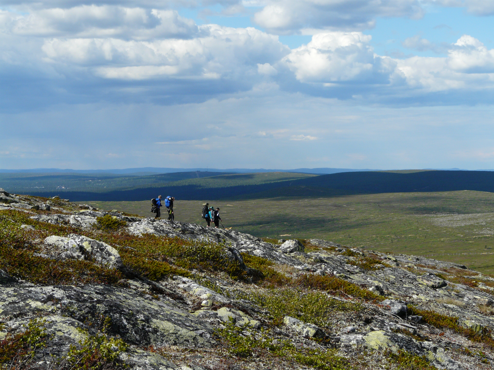
Laajat erämaat ja tunturit.
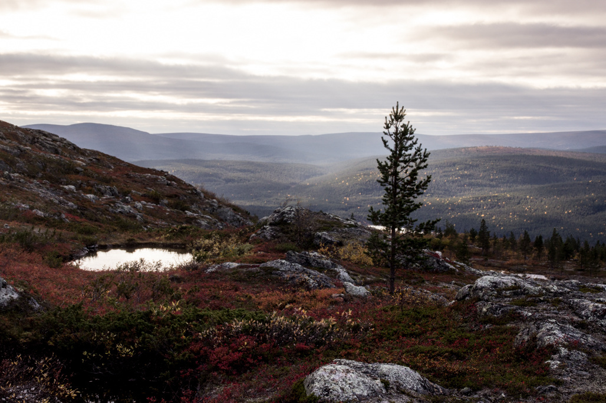
Suomen suurin kansallispuisto.
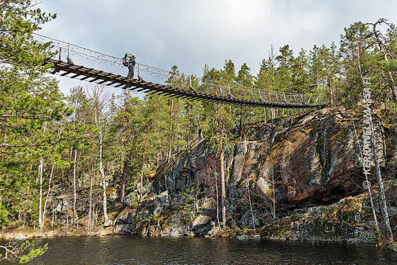
Lapinsalmen riippusilta.
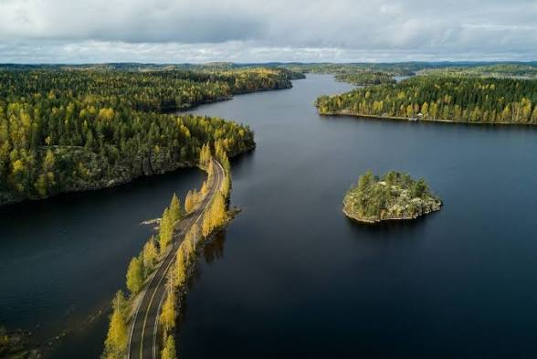
Saimaan saaristo ja norpat.
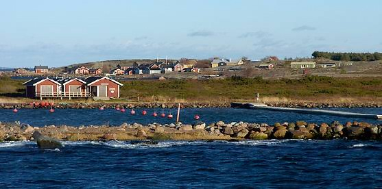
Tuhansia saaria ja luotoja.
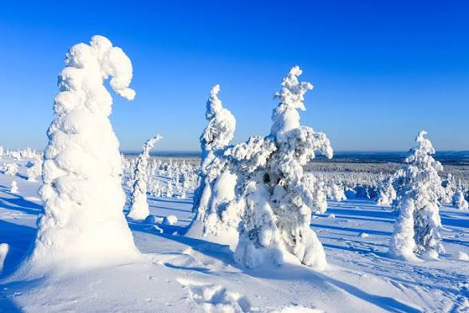
Talven tykkylumimaisemat.
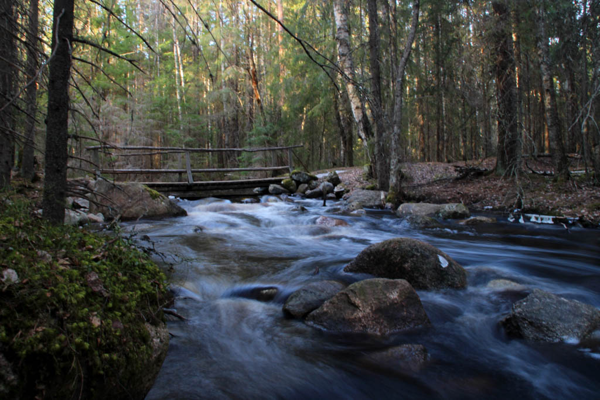
Vanhoja metsiä Pirkanmaalla.
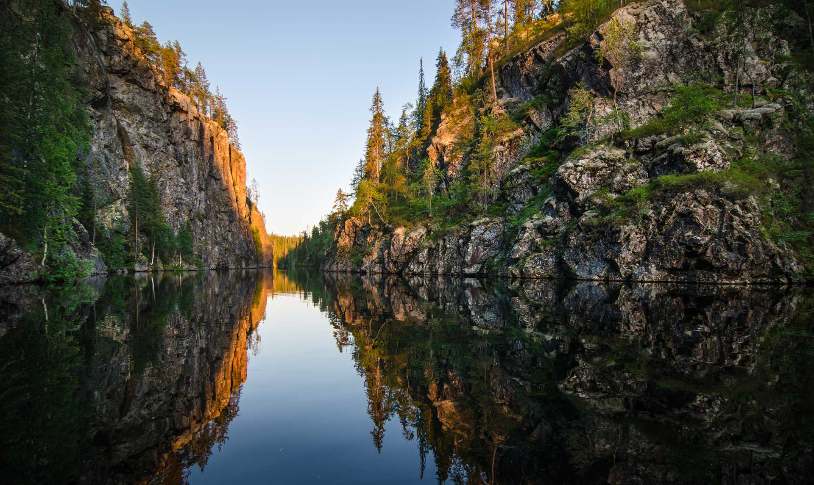
Kirkkaat vedet ja kalliomaalaukset.